顶级合作更强调技术、裁判显示、商品供应与赛事运行中的实际角色。联想、海信、蒙牛的判断重点因此不是 Logo 数量，而是资源是否进入可被验证的使用场景。
CHINA BRAND INDEX
中国品牌案例
2026 美加墨世界杯的中国品牌参与，不应只按“买了几个 FIFA 席位”理解：全球官方赞助趋向少而深，新增量则分散在授权商品、国家队、球星、转播内容与供应链服务。这里用六层矩阵说明品牌如何进入，再回到每个独立动作核验证据。
122中国品牌案例
61%占 201 案比例
93品牌 / 平台入口
62当前已核案例
四组数字暂缓作为结论
- “中国品牌整体投入超 5 亿美元”“较上届下降 64%”“占 FIFA 全球赞助收入近 1/5”“规模全球第二”目前缺少统计范围一致的一手出处。
- 联想、海信、蒙牛的权益费与配套营销费也暂不写入案例结论，待补合同期、币种、世界杯单届/多届分摊和媒体估算方法。
- FIFA 当前官方页面列出的商业层级包括 FIFA Partner、FIFA World Cup Sponsor Plus、FIFA Women’s Football Partner、FIFA World Cup Sponsor 与 Tournament Supporter；本站按公告中的英文身份记录，不套用未经确认的旧四级译法。
SIX-LAYER PARTICIPATION MATRIX
中国品牌进入世界杯经济的六层矩阵
身份、授权、人物、内容与交付分层记录
| 参与层 | 在买什么 / 做什么 | 研究判断与证据边界 | 在库案例入口 |
|---|---|---|---|
| LAYER 01 FIFA 全球官方赞助 FIFA 官方身份已核 | 用全球级赛事身份进入技术、转播、场边与赛事服务核心场景。 | 已核核心身份：联想为顶级 FIFA Partner / 官方技术合作伙伴；海信、蒙牛为 FIFA World Cup 26 Official Sponsor。具体合同金额与配套投放尚无可交叉验证的一手口径，暂不上站。 | |
| LAYER 02 FIFA 官方 IP 授权 逐案核验授权范围 | 把赛事 IP 转译成潮玩、酒饮、咖啡零售、卡牌、箱包、非遗与食品商品。 | 这一层的价值不是“低一级赞助”，而是以商品开发、零售触点和收藏机制承接赛事热度。每个授权市场、品类与期限仍需回到授权方或品牌公告逐案确认。 | |
| LAYER 03 国家队合作 品牌 / 足协口径逐案核验 | 以全球、区域或中国市场的国家队权益，绑定明确球迷阵营和赛果节点。 | 阿根廷、西班牙、葡萄牙等强队是主要入口；区域范围、排他品类和“官方合作伙伴 / 赞助商”称谓不能互换，案例页按公告原文记录。 | |
| LAYER 04 球星与名宿代言 人物关系与赛事权利分开记录 | 用现役顶流或退役名宿获得人格、声音、赛果和社交内容资产。 | 蒙牛的多球星组合与王老吉、东鹏、追觅、源制所、小咖咖啡的单点押注形成两种不同结构；是否具备赛事 IP 使用权，必须与个人代言权分开判断。 | |
| LAYER 05 转播与内容合作 总台 / 平台官方口径优先 | 通过总台、央视频、平台直播与栏目定制进入高频观赛陪伴。 | 这类合作购买的是持权媒体或内容场景，不等于 FIFA 官方赞助。节目整体播放、平台总流量也不能直接归因给单一合作品牌。 | |
| LAYER 06 赛事服务与供应链 1 个在库入口 · 4 类待核线索 | 以交通、场馆、装备、制造与城市服务进入世界杯经济的交付链。 | 宇通墨西哥纯电公交已进入案例库；中国中车、场馆翻新、义乌周边与装备出口目前仅作为补证线索，不在完成权属、项目范围和执行时间核验前计入“已核案例”。 |
本页核心身份的一手来源
- FIFA 官方合作伙伴体系与当前名单
- FIFA：Lenovo 成为官方技术合作伙伴
- FIFA：Hisense 延续合作并成为 World Cup 26 Sponsor
- FIFA：Mengniu 延长世界杯赞助合作
- FIFA：2026 全球赞助席位售罄
六层矩阵是研究归类，不是 FIFA 官方层级图；除全球赞助身份外，其余合作关系仍以各案例页列出的权利方、足协、品牌或持权媒体原始公告为准。
THREE SIGNALS
这届中国品牌赞助格局的三个信号
从席位竞争转向路径组合
授权商品、国家队与球星合作把高门槛的全球权益拆成更明确的市场、人群与品类任务，但“成本更低、声量不低”仍需逐案用投入和结果口径证明。
官方赞助看稀缺身份与深度交付；授权看商品和零售；国家队与球星看阵营和内容；转播看陪伴频次；供应链则看真实项目与长期交付，不能用同一组曝光指标比较。
CHINA CASES 01
官方伙伴与赛事技术
16 个独立动作
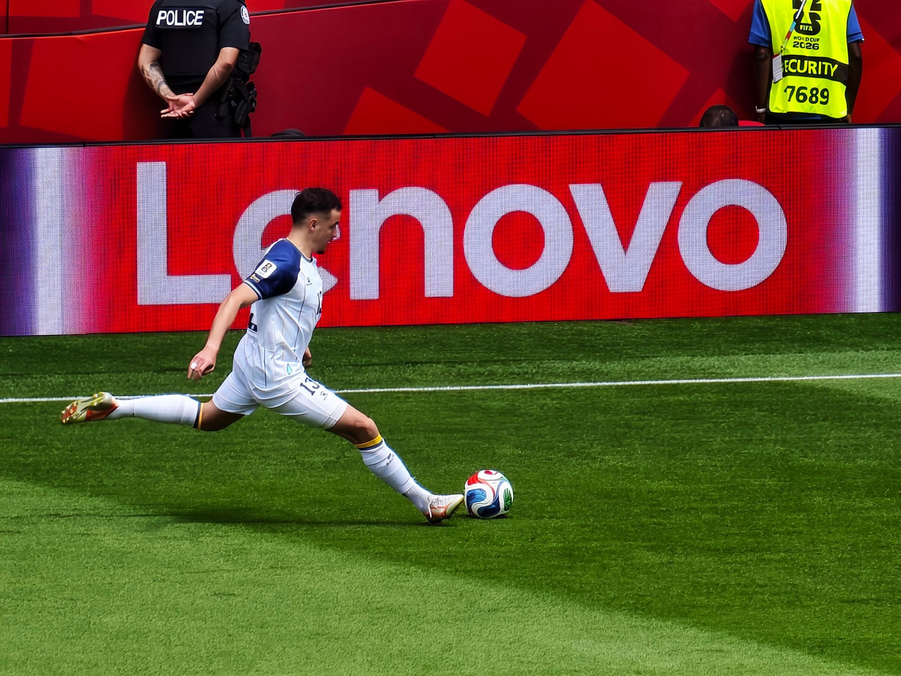
WORLD CUP CASE 001
联想：Football AI Pro
将赛事数据、战术分析与企业 AI 能力相连
已核验中国品牌全球官方与产品化
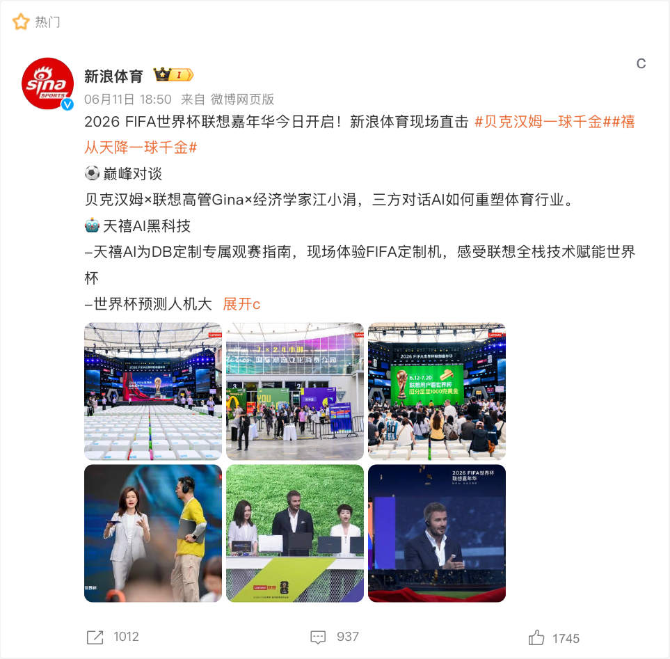
WORLD CUP CASE 002
联想：AI 球迷互动
技术从后台能力转为球迷可体验内容
已核验中国品牌全球官方与产品化
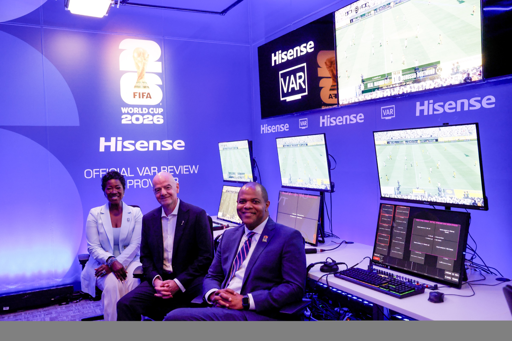
WORLD CUP CASE 003
海信：RGB-Mini LED / VAR 显示
让“赛事标准”成为产品理解理由
已核验中国品牌全球官方与产品化
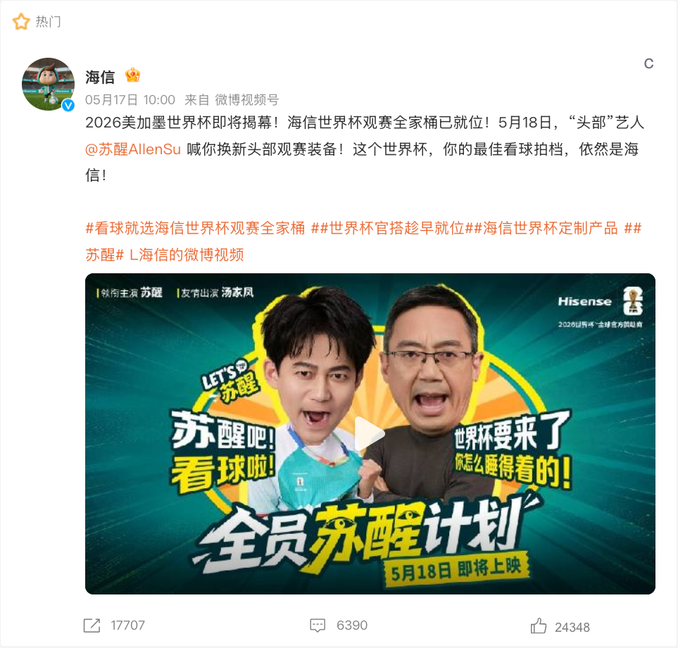
WORLD CUP CASE 004
海信：家庭观赛全家桶
从电视露出到家电组合购买
已核验中国品牌全球官方与产品化

WORLD CUP CASE 007
蒙牛 × 海信：“山蒙海誓”围挡共创
把单品牌围挡改写为中国品牌共同叙事
已核验中国品牌全球官方与产品化
中国企业参与
WORLD CUP CASE 053
宇通：墨西哥纯电公交
制造企业以基础设施交付参与世界杯经济
待补证据中国品牌中国企业参与
WORLD CUP CASE 060
乐奇 Rokid：AI 眼镜节目植入
把翻译、导航等功能变成可看的节目内容
已核验中国品牌持权媒体与大屏
中国企业参与
WORLD CUP CASE 080
联想 x 麦当劳：薯标鼠标
用可收藏的联名物把技术合作变成手感体验
部分核验中国品牌中国企业参与
中国企业参与
WORLD CUP CASE 101
联想：16 座场馆 AI 超级智能体
把赞助身份变成赛事运行所依赖的智能系统
部分核验中国品牌中国企业参与
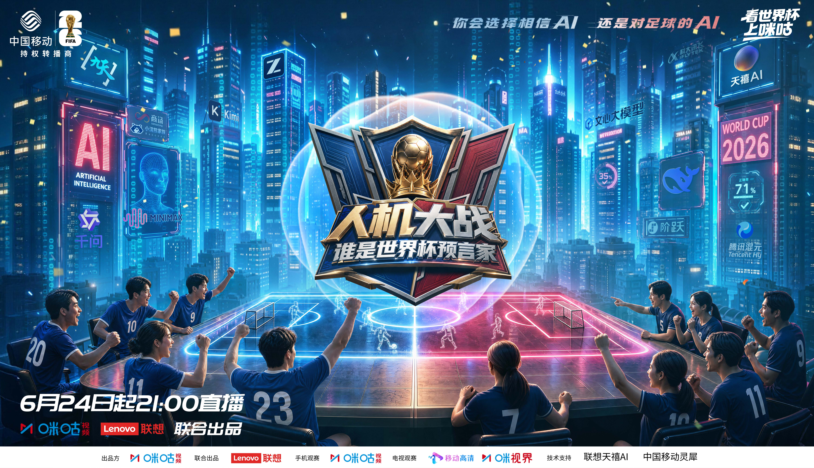
WORLD CUP CASE 102
联想：「世界杯预测人机大战」
让 DeepSeek、Kimi、文心一言、通义千问等模型成为可追更的赛程角色
已核验中国品牌中国企业参与
中国企业参与
WORLD CUP CASE 103
联想：31 城「世界杯同源技术区」嘉年华
把场馆后台技术搬到消费者可以亲手体验的线下空间
部分核验中国品牌中国企业参与
中国企业参与
WORLD CUP CASE 104
联想：1248 名球员 3D 数字分身系统
用全量球员数字分身支撑判罚解释和技术可视化
部分核验中国品牌中国企业参与
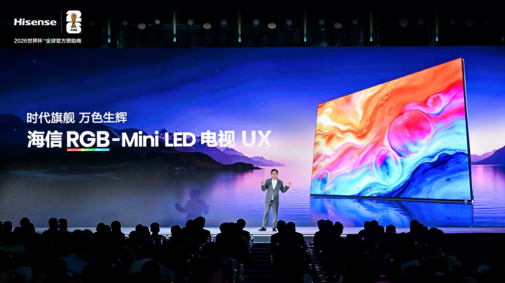
WORLD CUP CASE 105
海信：赛前预测—赛中同屏—赛后战术片
围绕一场比赛前中后三段设计可被使用的电视功能
已核验中国品牌中国企业参与
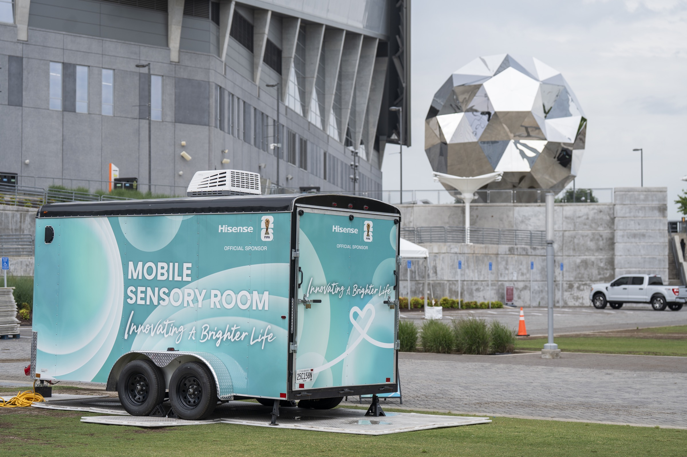
WORLD CUP CASE 106
海信 x FIFA：首个「感官包容性」赛事体验
把科技向善从公益口号落实到特殊感官需求人群的观赛体验
已核验中国品牌中国企业参与
中国企业参与
WORLD CUP CASE 107
海信：Our Host 家庭观赛喜剧
用 Terry Crews 的多重角色解释一场家庭观赛需要哪些家电
待补证据中国品牌中国企业参与
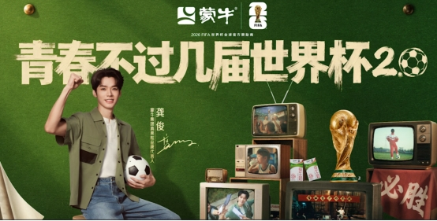
WORLD CUP CASE 110
蒙牛 x 海信：《青春不过几届世界杯 2.0》
用跨届观赛记忆把两个官方赞助商组织成共同叙事
已核验中国品牌中国企业参与
CHINA CASES 02
球队、球星与授权商品
38 个独立动作

WORLD CUP CASE 005
蒙牛：《冠军的秘密》
资源溢出与“放下冠军”的赛后收束
已核验中国品牌全球官方与产品化
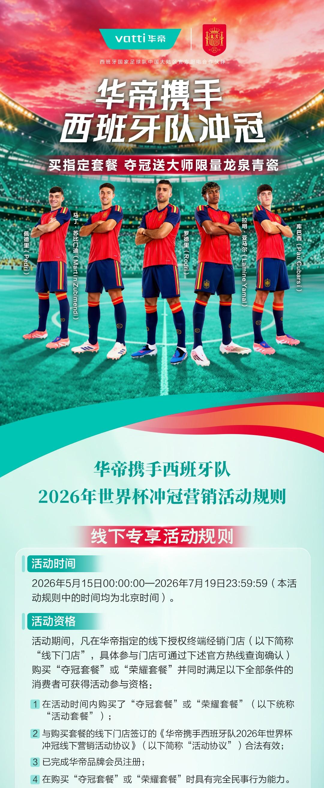
WORLD CUP CASE 029
华帝：西班牙冲冠送龙泉青瓷
用晋级结果升级赠品，把 2018 赛果承诺方法改写为可控的交易机制
已核验中国品牌中国企业参与
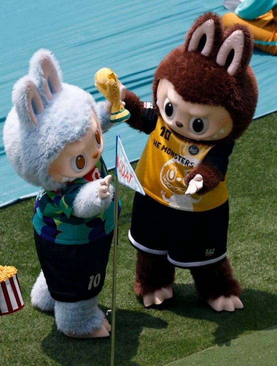
WORLD CUP CASE 030
泡泡玛特 × FIFA：让 LABUBU 从授权商品走上开幕式
以 THE MONSTERS 商品系列为底座，再进入官方音乐、开幕式与全球零售，把赛事授权升级为角色文化事件
已核验中国品牌中国企业参与
WORLD CUP CASE 031
五粮液：FIFA 联名酒与大力神杯
让冠军仪式感服务高端礼赠和商品化
已核验中国品牌中国企业参与
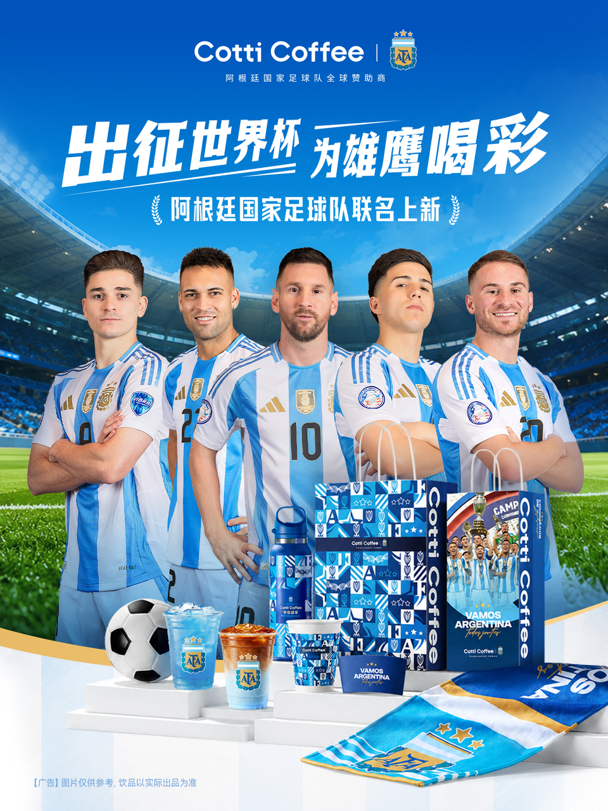
WORLD CUP CASE 032
库迪 × 阿根廷队：潘帕斯蓝联名上新
从全球赞助身份落到饮品、包材与运动周边的门店消费
已核验中国品牌中国企业参与

WORLD CUP CASE 033
瑞幸 × 西班牙队：弗朗明戈联名上新
把国家队身份翻译为饮品风味、主题杯与球员阵容内容
已核验中国品牌中国企业参与
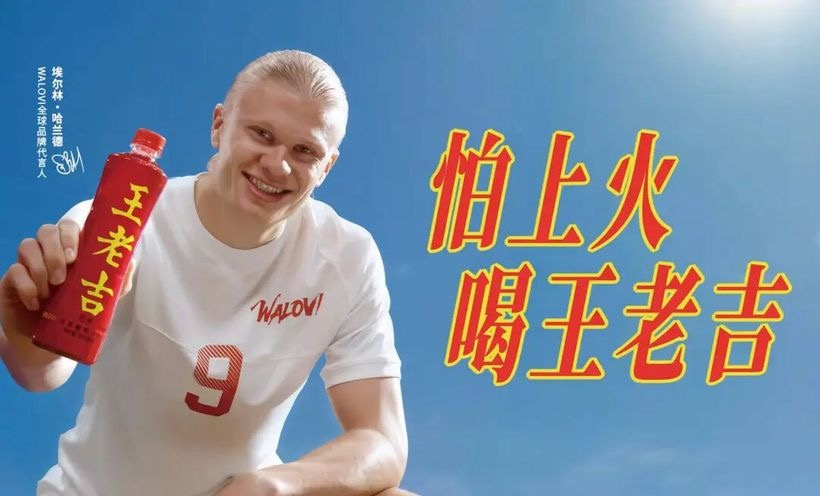
WORLD CUP CASE 034
王老吉 / WALOVI × 哈兰德：让“哈”成为全球声音锚点
用“哈兰德—哈王老吉”的声音双关，把中文超级符号、烧烤场景与全球广告连接起来
已核验中国品牌中国企业参与

WORLD CUP CASE 035
东鹏补水啦 × 姆巴佩：从速度代言到“补水时刻”
先用姆巴佩的速度资产建立功能信任，再借转播中的补水节点占据品类场景
已核验中国品牌中国企业参与
中国企业参与
WORLD CUP CASE 036
追觅 x C 罗
高端科技全球化表达
待补证据中国品牌中国企业参与
中国企业参与
WORLD CUP CASE 037
源制所 x 内马尔
明星资产与品类场景匹配
待补证据中国品牌中国企业参与
中国企业参与
WORLD CUP CASE 038
小咖咖啡 x 卡卡
退役球星如何服务门店内容
待补证据中国品牌中国企业参与
中国企业参与
WORLD CUP CASE 039
国窖 1573：阿根廷 x 葡萄牙
双队对冲风险与收藏酒产品化
待补证据中国品牌中国企业参与
中国企业参与
WORLD CUP CASE 040
TCL：阿根廷 / 西班牙
家电以球队与大屏场景做海外市场表达
待补证据中国品牌中国企业参与
中国企业参与
WORLD CUP CASE 042
长安：葡萄牙队
汽车品牌切入 C 罗相关市场
待补证据中国品牌中国企业参与
中国企业参与
WORLD CUP CASE 045
卡游 x Panini 球星卡
赛事热度向收藏和赛后交易周期延伸
待补证据中国品牌中国企业参与
中国企业参与
WORLD CUP CASE 046
元隆雅图 x 聚星动力
多队全品类授权的商品开发与上架
待补证据中国品牌中国企业参与
中国企业参与
WORLD CUP CASE 047
杭州孚德：大中华区授权运营
授权运营商如何扩大品类与零售触点
待补证据中国品牌中国企业参与
中国企业参与
WORLD CUP CASE 048
银座箱包：世界杯旅行箱
将赛事标识嵌入出行用品
待补证据中国品牌中国企业参与
中国企业参与
WORLD CUP CASE 049
云南彝绣：非遗联名
以地方工艺拓宽世界杯商品边界
待补证据中国品牌中国企业参与
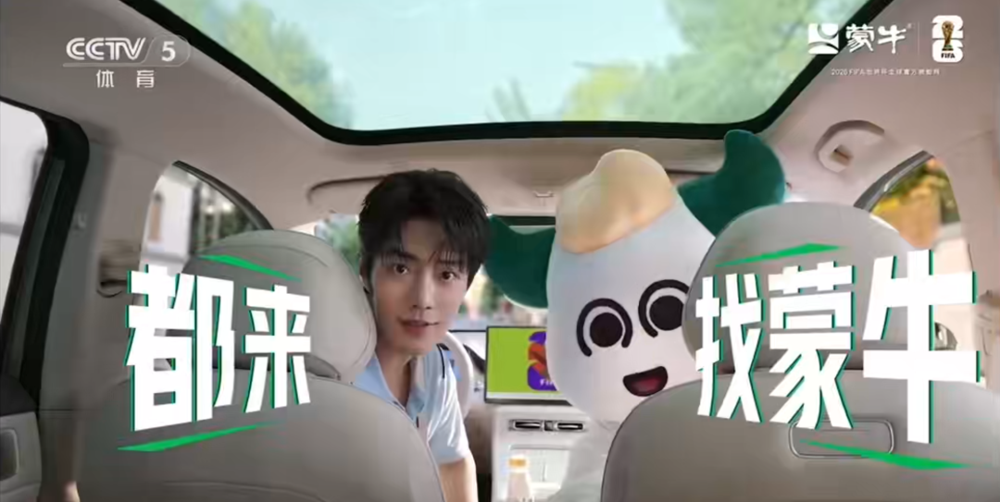
WORLD CUP CASE 056
蒙牛：补水暂停 + 节目
高频规则时点叠加球星与零售资产
已核验中国品牌持权媒体与大屏
中国企业参与
WORLD CUP CASE 082
伊利：梅罗双骄站
让球星权益成为每天会路过的城市符号
部分核验中国品牌中国企业参与

WORLD CUP CASE 096
喜茶：碰个世界杯
把国家队、隐藏款与碰杯动作转成可持续到门店的收藏游戏
已核验中国品牌中国企业参与
中国企业参与
WORLD CUP CASE 100
脉动：阿根廷生成式 AI 球员片
在拍摄受限的球星合作中，用生成式影像提高内容制作弹性
部分核验中国品牌中国企业参与
中国企业参与
WORLD CUP CASE 112
五粮液：四系列世界杯联名产品矩阵
用高端主品、金球造型、小酒盲盒和果味礼盒覆盖四类消费场景
已核验中国品牌中国企业参与
中国企业参与
WORLD CUP CASE 113
库迪：FIFA 纪念门票到店商品
把赛事票面符号做成普通消费者可获得的到店纪念品
部分核验中国品牌中国企业参与
中国企业参与
WORLD CUP CASE 114
库迪：国家队冰箱贴收集机制
用不同国家队冰箱贴制造多次购买和交换需求
部分核验中国品牌中国企业参与
中国企业参与
WORLD CUP CASE 115
伊利：五支国家队的「多点包围」资产矩阵
以阿根廷、法国、葡萄牙、西班牙、德国覆盖不同球迷阵营
部分核验中国品牌中国企业参与
中国企业参与
WORLD CUP CASE 116
瑞幸：C 罗 / 亚马尔杯套与保温杯
把两队和两代球星的阵营选择变成咖啡杯上的公开表达
部分核验中国品牌中国企业参与

WORLD CUP CASE 126
奕境汽车 × 阿根廷队：「进一球送 X9」
把每次进球变成车辆使用权福利的重复触发点，并让球队情绪承接新品上市节奏
部分核验中国品牌中国企业参与
中国企业参与
WORLD CUP CASE 133
阿维塔 x 葡萄牙国家队
以葡萄牙国家队连接智能豪华形象与海外市场认知
待补证据中国品牌中国企业参与
中国企业参与
WORLD CUP CASE 134
每日鲜语 x 梅西 / 姆巴佩 / 亚马尔
用三位不同年龄和国家的顶级球员覆盖成熟、当打与新生代叙事
待补证据中国品牌中国企业参与
中国企业参与
WORLD CUP CASE 135
慕思 x 阿根廷国家队
把凌晨看球后的恢复需求与阿根廷队情绪资产连接
待补证据中国品牌中国企业参与
中国企业参与
WORLD CUP CASE 136
瑞幸：队徽徽章、挂件与冷变杯周边线
用低门槛徽章、随身挂件与高客单冷变杯覆盖不同收藏深度
部分核验中国品牌中国企业参与
中国企业参与
WORLD CUP CASE 175
青岛啤酒 x 范志毅：「拼桌邀约」
把足球对位、阵型与热爱翻译成火锅拼桌和餐桌话语
已核验中国品牌中国企业参与
中国企业参与
WORLD CUP CASE 181
美团 x 加纳国家队：二度合作
用加纳国家队建立差异化球队资产，并连接中国球迷的生活需求
已核验中国品牌中国企业参与
中国企业参与
WORLD CUP CASE 182
五粮液：冠军国家队盲盒与足金徽章
把夺冠悬念、收藏开箱与高端礼赠放进同一商品机制
部分核验中国品牌中国企业参与
中国企业参与
WORLD CUP CASE 183
泡泡玛特：LABUBU 进入世界杯开幕式
让中国原创潮玩从授权货架进入赛事主流文化现场
部分核验中国品牌中国企业参与
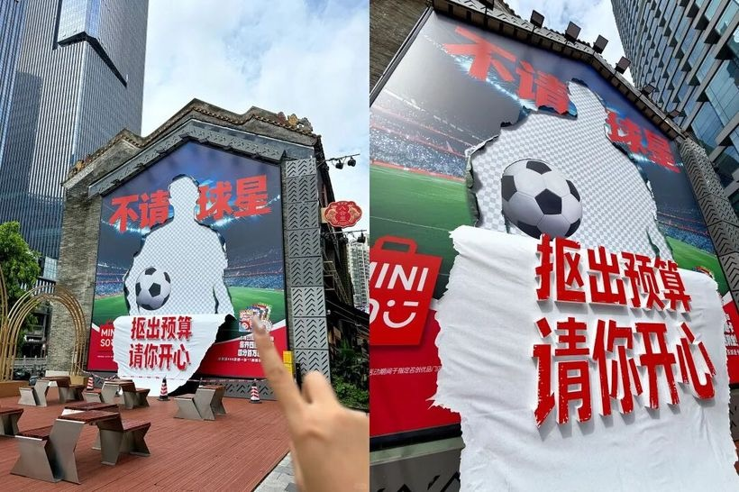
WORLD CUP CASE 184
名创优品：“不请球星，抠出预算请你开心”
把球星缺席做成城市视觉悬念，再用球迷卡和百万返利金兑现“预算给消费者”
已核验中国品牌中国企业参与
CHINA CASES 03
媒体、平台与 AI 工具
39 个独立动作
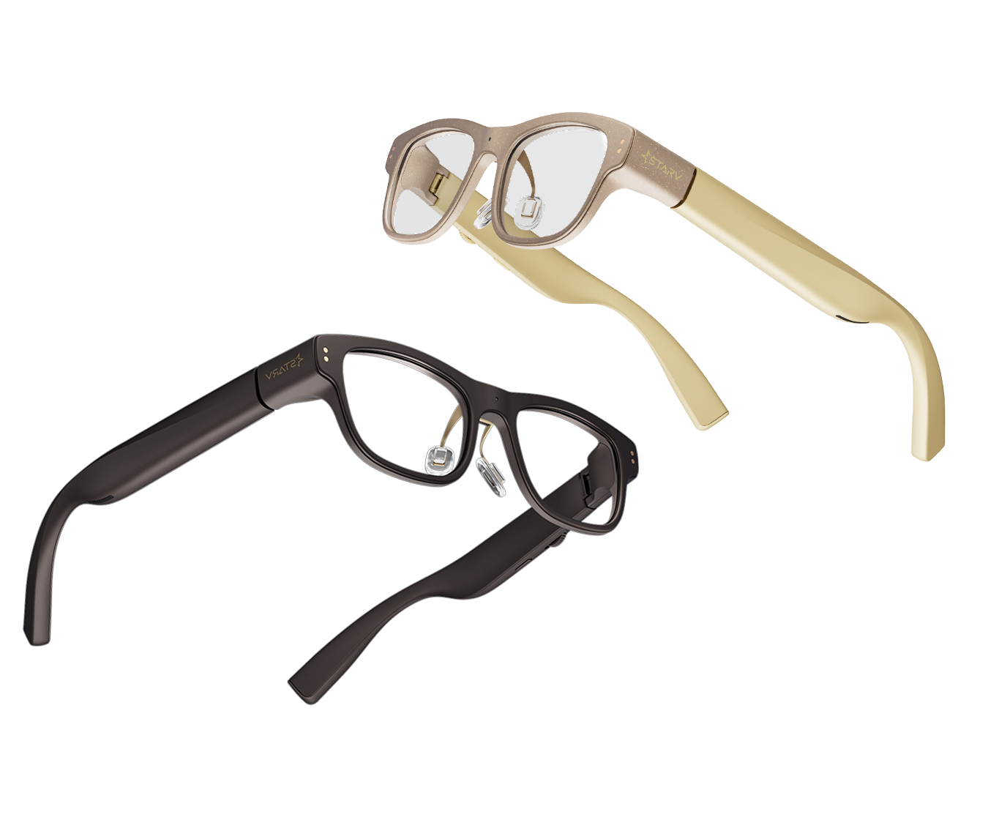
WORLD CUP CASE 044
魅族 StarV Air2
以跨语言观赛需求检验产品机会，赛事执行仍待证
部分核验中国品牌中国企业参与
WORLD CUP CASE 054
吉利银河：《豪门盛宴》
栏目陪伴、实景用车与留资转化
已核验中国品牌持权媒体与大屏

WORLD CUP CASE 055
五粮液：《谁是冠军》
竞猜、内容和产品扫码的大小屏闭环
已核验中国品牌持权媒体与大屏
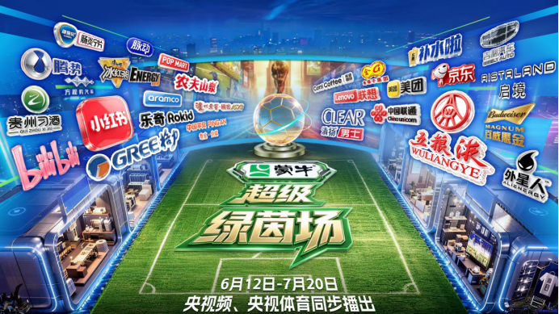
WORLD CUP CASE 057
外星人：罗纳尔多贴片 + 《运动充“电”站》
魔性广告片、节目语言与开盖促销的组合
已核验中国品牌持权媒体与大屏
持权媒体与大屏
WORLD CUP CASE 058
BOSS 直聘：《我爱世界杯》
先顺着“休息看球”情绪，再解释招聘平台
部分核验中国品牌持权媒体与大屏
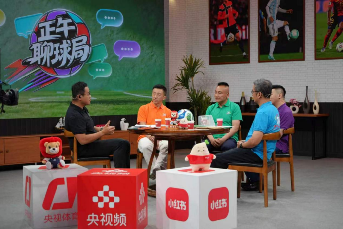
WORLD CUP CASE 059
小红书：104 场免费直播 +《正午聊球局》
大屏导入、社区讨论和创作沉淀
已核验中国品牌持权媒体与大屏
持权媒体与大屏
WORLD CUP CASE 061
青岛啤酒：超级复盘
以复盘时段占据“陪你聊球”的生活方式
已核验中国品牌持权媒体与大屏
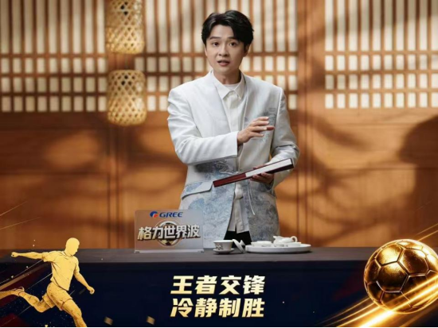
WORLD CUP CASE 062
格力：《我的足球搭子》
将观赛高温、熬夜与清凉需求接到终端
已核验中国品牌持权媒体与大屏
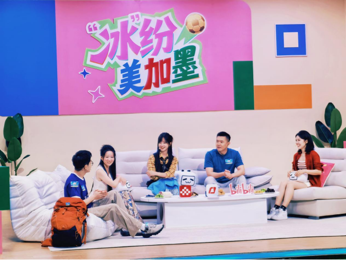
WORLD CUP CASE 063
Bilibili：《冰纷美加墨》
用新手友好的综艺化内容争取泛球迷
已核验中国品牌持权媒体与大屏

WORLD CUP CASE 064
库迪：直播互动植入
通过弹窗、礼物和评论区进入主动参与
已核验中国品牌持权媒体与大屏
WORLD CUP CASE 065
康师傅能量冰红茶：主题分岛
饮料如何从硬广变为节目化种草
已核验中国品牌持权媒体与大屏
持权媒体与大屏
WORLD CUP CASE 066
凉白开：央视赛事贴片
日常饮品以稳定重复占领夜间观赛记忆
待补证据中国品牌持权媒体与大屏
持权媒体与大屏
WORLD CUP CASE 067
咪咕：多解说流与世界杯派对
用名嘴、女性视角和方言扩展观看人群
待补证据中国品牌持权媒体与大屏
中国企业参与
WORLD CUP CASE 081
淘宝闪购：橙就时刻
把比赛日情绪压缩进“下单到家”的即时动作
部分核验中国品牌中国企业参与
中国企业参与
WORLD CUP CASE 083
天猫：路人世界杯
不依赖巨星，把镜头给到路人与日常观赛角色
部分核验中国品牌中国企业参与
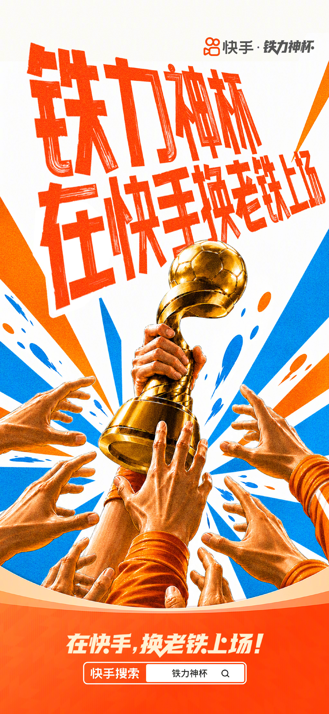
WORLD CUP CASE 094
快手：铁力神杯与“换老铁上场”
把普通人的看球日常做成平台自己的世界杯主叙事
已核验中国品牌持权媒体与大屏
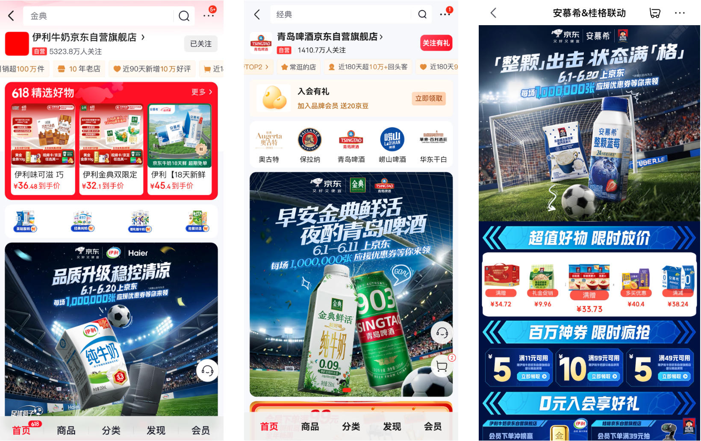
WORLD CUP CASE 095
伊利 × 各品牌联名：三组“观赛搭子 CP”（京东承接）
用三组功能互补的品牌 CP 覆盖居家观赛、昼夜陪伴和能量续航，再把赛事关注接回优惠券与站内货架
已核验中国品牌中国企业参与
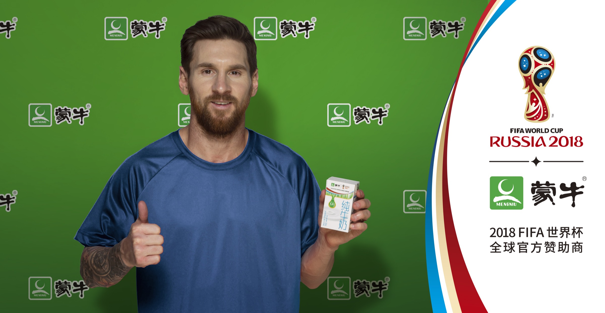
WORLD CUP CASE 108
蒙牛：“天生要强”跨三届情绪平台
从 2018“天生要强”、2022“不慌”到 2026“冠军的秘密”，让同一精神跨赛果生长
已核验中国品牌中国企业参与
中国企业参与
WORLD CUP CASE 111
五粮液：「猜分组赢真免单」
从分组抽签开始提前锁定购买、等待与结果揭晓的互动周期
已核验中国品牌中国企业参与
中国企业参与
WORLD CUP CASE 117
脉动：「AI 体能预测器」
让用户把年龄和运动频率换算成一张可分享的球员认证卡
部分核验中国品牌中国企业参与
中国企业参与
WORLD CUP CASE 118
Kimi：104 场 AI 全程预测
用胜平负、比分与晋级路径建立每天可回访的垂类使用场景
部分核验中国品牌中国企业参与
中国企业参与
WORLD CUP CASE 119
通义千问：「足球预测助手」
把海拔、天气、伤病等变量组织成普通用户可读的赛前判断
部分核验中国品牌中国企业参与
持权媒体与大屏
WORLD CUP CASE 120
咪咕：多方言 AI 实时解说
用粤语、四川话等口音降低全国用户的观看距离
部分核验中国品牌持权媒体与大屏
持权媒体与大屏
WORLD CUP CASE 121
咪咕：实时热力图与传球网络
让轻度用户在直播过程中看懂跑动、空间和传球关系
部分核验中国品牌持权媒体与大屏
持权媒体与大屏
WORLD CUP CASE 122
咪咕：「提问即答」直播 AI 助手
把球员、球队与历史问题的查询留在播放器内完成
部分核验中国品牌持权媒体与大屏
中国企业参与
WORLD CUP CASE 124
淘宝：「不看主队就能赢」全 AI广告片
把戴眼罩、做家务、躲厕所等“不敢看”行为变成商品推荐剧情
已核验中国品牌中国企业参与
中国企业参与
WORLD CUP CASE 125
淘宝：「不观赛趣味宝贝」五城大屏
把眼罩、电视遮罩和单词卷纸从社交梗送进核心城市公共空间
已核验中国品牌中国企业参与
中国企业参与
WORLD CUP CASE 128
同程旅行：世界杯「影音房」供给与入住增长
用大屏、零食、延迟退房把酒店房间改造成安静观赛场
部分核验中国品牌中国企业参与
中国企业参与
WORLD CUP CASE 165
淘宝：「万千足球宝贝」不规则球桌公益
让城市用户亲手感受山区孩子在非标准场地踢球的困难
已核验中国品牌中国企业参与
中国企业参与
WORLD CUP CASE 166
淘宝：「足球宝贝」全品类主会场
把“足球宝贝”从单一形象扩展为一万种普通人的热爱方式
已核验中国品牌中国企业参与
中国企业参与
WORLD CUP CASE 167
天猫：「大力支持这一支」少年足球
联合十个世界杯相关品牌，把赛事注意力转给中国足球少年
已核验中国品牌中国企业参与
持权媒体与大屏
WORLD CUP CASE 168
小红书 x 新华社：《上场，就是主场》
把世界杯流量从世界赛场带回中国 1640 支民间球队
已核验中国品牌持权媒体与大屏
持权媒体与大屏
WORLD CUP CASE 169
小红书：首届「野球节」
把线上足球社区落到虹口足球场的真实比赛和生活市集
已核验中国品牌持权媒体与大屏
持权媒体与大屏
WORLD CUP CASE 170
咪咕：首届「AI 世界杯」观赛功能
用 AI 解说、问答和比赛数据降低非核心球迷理解门槛
已核验中国品牌持权媒体与大屏
持权媒体与大屏
WORLD CUP CASE 171
咪咕：《足球拯救计划》全 AI 宣传片
用“足球消失的近未来”建立 AI 世界杯的创意主线
已核验中国品牌持权媒体与大屏
持权媒体与大屏
WORLD CUP CASE 172
咪咕：《人机大战》自有内容 IP
把模型能力变成可追更、可讨论的人机对抗内容
已核验中国品牌持权媒体与大屏
持权媒体与大屏
WORLD CUP CASE 173
咪咕：200 城 AI 线下观赛活动
把数字转播能力带进 200 多个城市的共同观看现场
已核验中国品牌持权媒体与大屏
持权媒体与大屏
WORLD CUP CASE 179
康恩贝肠炎宁 x《赢在美加墨》
在烧烤、冰啤与熬夜看球的高发时刻提前占位
已核验中国品牌持权媒体与大屏
中国企业参与
WORLD CUP CASE 180
美团小团 x 退钱哥：「世界上最好的球迷」
用普通中国球迷十年等待解释小团如何安排看球需求
已核验中国品牌中国企业参与
CHINA CASES 04
消费、门店与生活场景
29 个独立动作
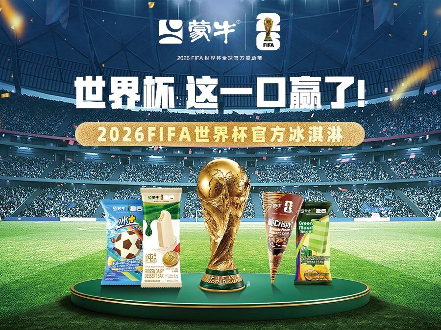
WORLD CUP CASE 006
蒙牛：世界杯冰淇淋
用可购买产品把全球权益落地海外零售
已核验中国品牌全球官方与产品化
中国企业参与
WORLD CUP CASE 041
伊利：双边决赛社媒
“两边都是自己人”的资源组合叙事
待补证据中国品牌中国企业参与
中国企业参与
WORLD CUP CASE 043
卡尔美：约旦 / 波黑
用区域市场和低成本替代顶流争夺
待补证据中国品牌中国企业参与
中国企业参与
WORLD CUP CASE 050
妙可蓝多：奶酪新品
高频食品如何落到定制商品款式
待补证据中国品牌中国企业参与
中国企业参与
WORLD CUP CASE 051
凯撒旅业：观赛旅行
从门票到签证、路线和旅行团的服务交付
待补证据中国品牌中国企业参与
中国企业参与
WORLD CUP CASE 052
万达体育：VIP 旅行服务
高客单观赛人群的定制服务
待补证据中国品牌中国企业参与
中国企业参与
WORLD CUP CASE 079
李宁：塞梅多与佛得角黑马
以低成本资产放大冷门球队的上升叙事
部分核验中国品牌中国企业参与
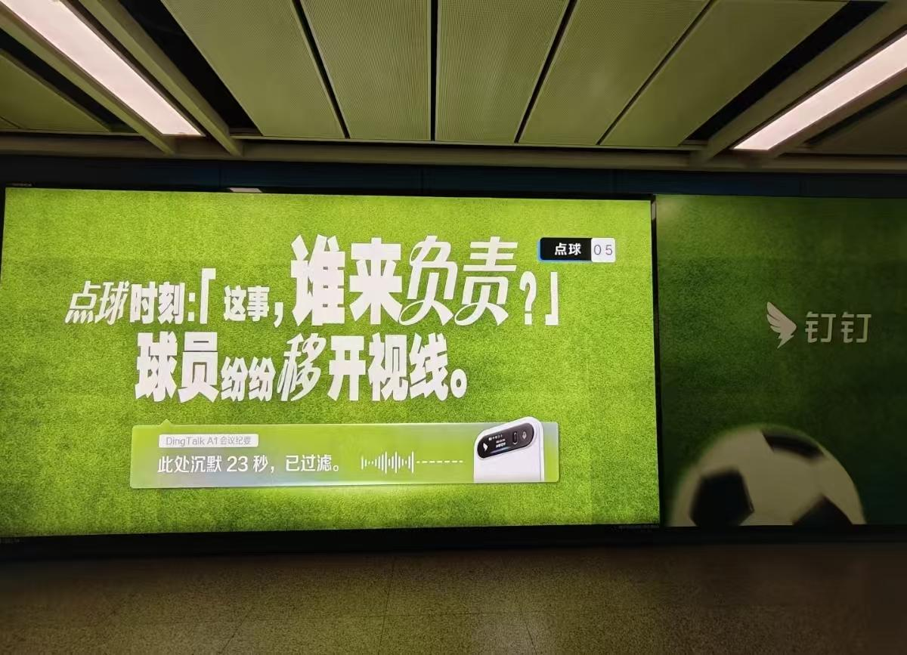
WORLD CUP CASE 098
钉钉：会议踢皮球杯赛
借足球动作解释办公室协作摩擦，把赛事梗翻译成产品问题
已核验中国品牌中国企业参与
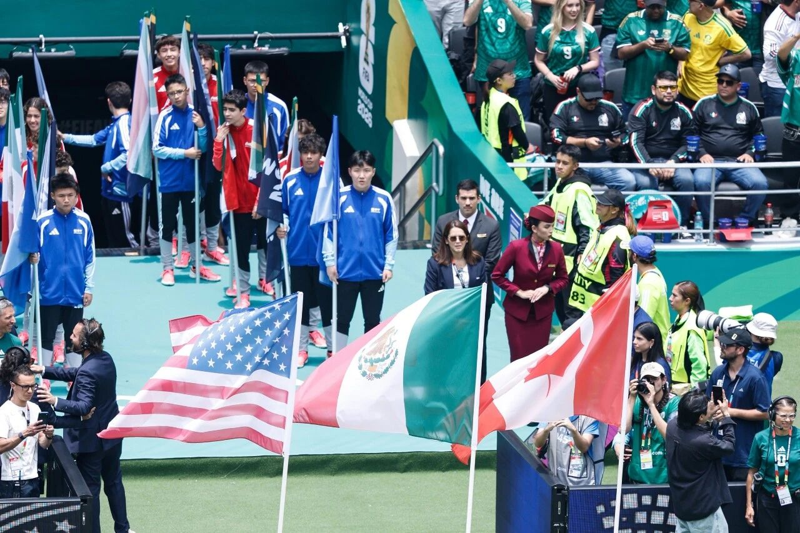
WORLD CUP CASE 109
蒙牛：内蒙古青少年护旗手计划
把稀缺揭幕战名额从抽奖奖品变成青少年成长经历
已核验中国品牌中国企业参与
中国企业参与
WORLD CUP CASE 123
同仁堂五子衍宗丸：「电梯里的世界杯」
用“熬夜看球精力虚”翻译传统中药的现代使用语境
已核验中国品牌中国企业参与
中国企业参与
WORLD CUP CASE 127
携程：「观赛 + 艺术 + 美食」文化度假模块
用大都会、百老汇与米其林内容填满跨城观赛空档
部分核验中国品牌中国企业参与
中国企业参与
WORLD CUP CASE 129
锅圈：「观赛夜宵全家桶」
把烧烤、小龙虾、卤味与啤酒组织成一单解决的观赛补给
部分核验中国品牌中国企业参与
中国企业参与
WORLD CUP CASE 130
三全：酥香炸物居家观赛组合
把街头炸物移进家庭厨房，承接凌晨看球的快速出餐
部分核验中国品牌中国企业参与
中国企业参与
WORLD CUP CASE 131
思念：手作馄饨的清晨观赛早餐
用短时间可完成的热食承接清晨比赛后的早餐需求
部分核验中国品牌中国企业参与
中国企业参与
WORLD CUP CASE 132
爷爷不泡茶：「好苹友世界杯开瓶器」冰箱贴
把开瓶器功能与“好苹友”产品 IP 结合为可留存的小周边
部分核验中国品牌中国企业参与
中国企业参与
WORLD CUP CASE 161
特仑苏：冠军之外的「更好」故事
把冠军叙事改写为每片土地与普通人的持续努力
已核验中国品牌中国企业参与
中国企业参与
WORLD CUP CASE 162
特仑苏 x 詹俊：「生态世界杯」
用足球语言重新解释品牌 17 年治沙与生态投入
已核验中国品牌中国企业参与
中国企业参与
WORLD CUP CASE 163
盒马：世界杯慢融冰销量增长
从观赛调饮需求中识别一款不起眼但高增长的基础商品
已核验中国品牌中国企业参与
中国企业参与
WORLD CUP CASE 164
美团外卖：「球赛熬人，咖啡解困」
把凌晨看球后的困倦转成早晨咖啡订单
已核验中国品牌中国企业参与
中国企业参与
WORLD CUP CASE 174
青岛啤酒 x 快乐小羊：美加墨火锅观赛席
把中国啤酒与中式火锅带进美加墨三地 32 家餐厅
已核验中国品牌中国企业参与
中国企业参与
WORLD CUP CASE 176
伊利：《这个夏天，谢谢足球让我们哭过》
用共同的哭与笑收束多队合作和整届赛事记忆
已核验中国品牌中国企业参与
中国企业参与
WORLD CUP CASE 177
同仁堂：地铁「一键打气」装置
把熬夜看球后的“泄气”做成可以亲手按回去的充气足球
已核验中国品牌中国企业参与
中国企业参与
WORLD CUP CASE 178
三九胃泰：四大「胃不舒服」场景种草
围绕熬夜、辛辣、饮酒、油腻四类看球场景组织内容
已核验中国品牌中国企业参与
中国企业参与
WORLD CUP CASE 185
美团歪马送酒：五角场世界杯嘉年华
把线上送酒服务和线下商圈观赛聚会连接
部分核验中国品牌中国企业参与
中国企业参与
WORLD CUP CASE 186
锅圈：无人值守门店通宵观赛补给
用无人值守门店覆盖凌晨看球的补给时间缺口
部分核验中国品牌中国企业参与
中国企业参与
WORLD CUP CASE 187
海底捞：世界杯门店 19.9 元畅饮
用低门槛畅饮权益放大多人看球的火锅聚会
部分核验中国品牌中国企业参与
中国企业参与
WORLD CUP CASE 188
挪瓦咖啡：能量系列与 24 小时门店
用产品和营业时间共同承接凌晨与清晨看球
部分核验中国品牌中国企业参与
中国企业参与
WORLD CUP CASE 189
快乐番薯：足球主题杯
用高频杯身把足球氛围带进区域门店日常消费
部分核验中国品牌中国企业参与
中国企业参与
WORLD CUP CASE 190
茉莉奶白：英国抹茶系列与足球周边
用英国市场新品与足球周边测试中国茶饮的本地赛事表达
部分核验中国品牌中国企业参与